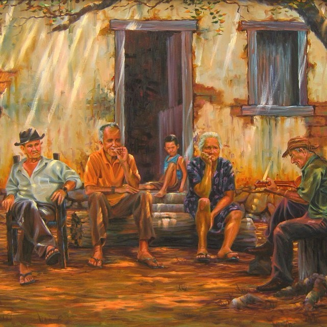

Atualmente
Em meio a predios e casas ainda temos o povo do sertão.
Ler mais about this is some titleA origem da população brasileira é fundamentada na miscigenação de povos. Assim, tradições, religiosidade, hábitos, ideologias foram implementados e adaptados, ocasionando a formação de povoamentos em regiões com as quais se identificavam. Estes se tornaram os povos tradicionais brasileiros, cujo deram início ao Brasil atual. São povos tradicionais: Indígenas, Quilombolas, Ciganos, Extrativistas, Pescadores Artesanais, de Terreiro, Ribeirinhos e os Caipiras. Discorreremos aspectos culturais deste povo, estes sendo suas Formas de Expressão, Saberes, Localidades de Importância e suas Celebrações, com o caráter de esclarecer e demonstrar a origem da cultura caipira A cultura do povo caipira está implementada em nosso cotidiano, mesmo que de implícita forma. E, para que haja um entendimento das origens do povo brasileiro, saber sobre é crucial. O termo “Caipira” vem da língua tupi, ka’apir ou kaa-pira “cortador de mato”, ka’apora “habitante do mato” a partir da junção de caa “mato” e pora “gente”. A história dos caipiras se inicia com o encontro entre os portugueses e os indígenas, sendo inteiramente ligada ao período do bandeirismo. As primeiras origens caipiras partiram dos aldeamentos da vila de São Paulo. O termo caipira é empregado para falar sobre a população que vive no interior dos estados de São Paulo, Paraná, Mato Grosso do Sul, Goiás e Minas Gerais. Nestas regiões a denominação pode variar, como em Minas Gerais, na região Nordeste e Norte que correspondem respectivamente ao capiau, matuto e a caboco.
Em meio a predios e casas ainda temos o povo do sertão.
Ler mais about this is some title